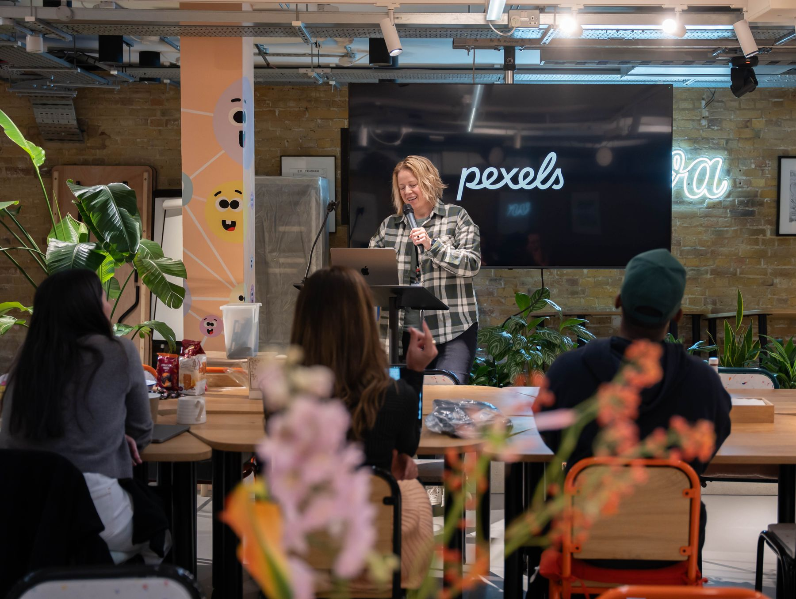
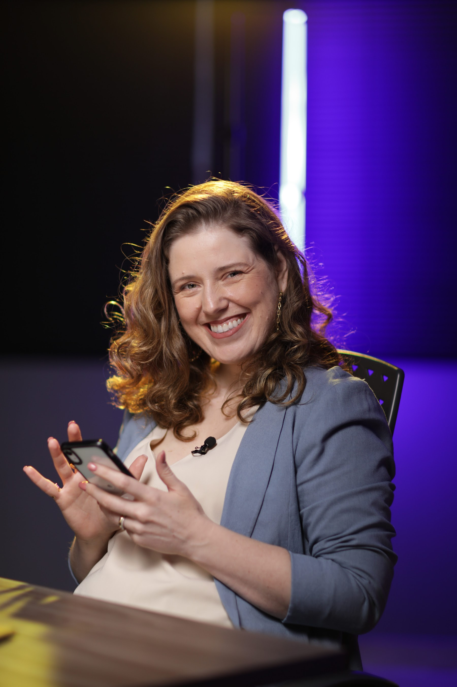
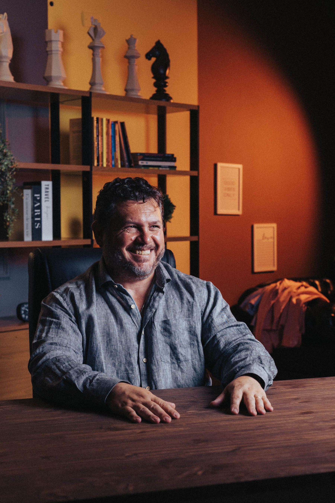

01
PROJETOS NA GAVETA
Grupos, palestras, formações e imersões que continuam apenas no planejamento.
ALICERCE DO EXTRAORDINÁRIO: Uma jornada para transformar anos de conhecimento e experiência na próxima grande expansão da sua carreira.
Assista e descubra como transformar o conhecimento que já possui em novas possibilidades profissionais.
NESTE VÍDEO, VOCÊ VAI ENTENDER:Você não precisa começar do zero.
Precisa descobrir como expandir a carreira que já construiu.
Mas será que já explorou tudo o que sua experiência permite construir?
Você estudou, se dedicou, conquistou a confiança de clientes e pacientes e acumulou um conhecimento valioso.
Mas talvez exista algo que ainda não conseguiu colocar no mundo.
Grupos, palestras, formações e imersões que continuam apenas no planejamento.

Você sabe o quanto pode ajudar, mas nem sempre consegue mostrar isso ao público certo.
Você gostaria de valorizar melhor sua experiência, mas ainda sente insegurança ao apresentar seus preços.
Para crescer no modelo atual, parece que você precisaria trabalhar cada vez mais horas.
O Alicerce é para profissionais do cuidado humano que:
PSICOLOGIA · TERAPIA · SAÚDE · BEM-ESTAR · EDUCAÇÃO · DESENVOLVIMENTO HUMANO
Uma jornada que integra expansão profissional, sustentação emocional e qualidade de vida.
Desenvolva recursos para sair da intenção e entrar em ação.
Transforme experiência em entregas, conexões e vendas.
Cuide da energia, dos relacionamentos e da vida que deseja viver.
Trabalhe padrões automáticos que podem interferir nas suas decisões, na exposição profissional e na execução de projetos.

Conteúdos gravados e ferramentas práticas para reconhecer e trabalhar padrões automáticos de comportamento.

Aprofunde a aplicação do CSV, esclareça dúvidas e receba direcionamentos personalizados durante os encontros.

Orientação individualizada pelo WhatsApp com uma pessoa treinada da equipe.
Três imersões online e ao vivo para transformar suas ideias em entregas profissionais, desenvolver conexões e fechar com novos clientes de valor.

Estruture grupos, workshops, formações, serviços ou outros projetos com foco na qualidade da entrega.

Desenvolva posicionamento e comunicação para mostrar seu valor e se conectar com o público certo.

Aprenda a apresentar ofertas, conversar sobre preços e conduzir vendas com ética e segurança.
Imersões previstas para sábados inteiros, no final de janeiro, fevereiro e março de 2027.
Porque uma carreira extraordinária também precisa fazer sentido para quem a vive.

Conteúdos e exercícios para trabalhar disposição, motivação, prazer e energia de vida.

Trabalhe sua relação com o corpo, a autoestima, a sexualidade e a intimidade com privacidade.

Laboratório de Experimentações no Telegram para praticar comunicação, convivência e relacionamentos.
Destravar para agir. Construir para expandir. Sustentar para viver.
Uma jornada integrada para transformar sua experiência em novas possibilidades profissionais e pessoais.
Uma história sobre conhecimento, dificuldades emocionais e a reconstrução de uma trajetória profissional.
Paloma se mudou para São Paulo para desenvolver seu negócio. Tinha formação extensa, experiência e conhecimento. Mas, após um período emocionalmente difícil, ficou sem trabalho e sem condições de manter o apartamento.
Passou a comer em um restaurante comunitário de R$1, procurou diferentes trabalhos e chegou a vender saquinhos de lixo no semáforo para conseguir dinheiro.
A reconstrução da Paloma começou com a fase de DESTRAVAR, com foco em desativar os padrões automáticos de sobrevivência que a faziam paralisar diante dos desafios emocionais.
Logo depois desse processo ela voltou a trabalhar em sua área, recebeu propostas salariais muito superiores e, com o tempo, conseguiu quitar mais de R$ 45 mil em dívidas bancárias.
O conhecimento técnico como personal trainer ela já tinha. O que precisou reconstruir foram as condições emocionais para colocá-lo em movimento.
Em outros relatos, Paloma também conta que passou a gravar vídeos, se posicionar profissionalmente e participou de um programa de TV.
“Cara, o que eu tô fazendo aqui? Eu tenho tanto conhecimento, eu sei tanta coisa. Eu sou boa no que eu faço. Mas eu precisava do dinheiro.” “No dia que eu paguei eu chorei.”
 ▶ASSISTA À HISTÓRIA
▶ASSISTA À HISTÓRIADa experiência profissional à construção de grupos e experiências de aprendizagem.
Gicela é psicóloga e atua com o público cristão. Sua formação e experiência já existiam antes de começar a explorar novos formatos.
Após um atendimento de Botão de Emergência com orientações sobre o pilar de CONSTRUIR (posicionamento nas redes sociais e foco em tirar projetos da gaveta) desenvolveu conteúdos e novos formatos de entrega.
Criou imersões online, presenciais e até mesmo um produto digital. E já está se organizando para expandir sua comunidade para formação de profissionais.
“Eu já sabia tudo isso, mas você organizou de um jeito que fez toda diferença.” Gicela Alves
Uma experiência que mostra por que popularidade e valor comercial não são a mesma coisa.
Andrea já possuía experiência em seu trabalho como Alfabetizadora Corporal e Mentora e já tinha vivido uma cura espontânea de 6 anos de fibromialgia após um atendimento em grupo no contexto de SUSTENTAR.
Após aplicar orientações de comunicação e posicionamento das redes sociais que serão ensinadas na Imersão Presença Digital, relatou mais leveza e consistência para criar conteúdos.
Em um de seus relatos, contou que uma publicação com apenas quatro curtidas esteve ligada à venda de um produto de R$ 6 mil.
Não é o número de curtidas que, isoladamente, define se uma comunicação chegou à pessoa certa. É a presença digital alinhada.
“Já tinha investido mais de R$40 mil reais em mentoria de marketing e o que resolveu minhas redes foi a experiência desse conteúdo novo que a Vanessa trouxe.” Andrea Spolaor
Uma história sobre dinheiro, escolhas e espaço para viver.
Elaine é psicóloga e especialista em Avaliação Psicológica.
Relatou que a experiência com o CSV contribuiu para trabalhar a relação com o próprio valor e decisões profissionais. Além de a ter livrado de uma candidíase que a acompanhava há 5 anos.
Ela já tinha 3 especializações quando sentia dificuldade em cobrar mais.
E agora cobra o valor justo pelo seu trabalho porque deixou para trás o bloqueio que atrapalhava a sustentar um valor mais alto.
“Crescer também pode significar recuperar espaço na própria agenda.” Elaine Cristina Mazaron
Solicite cancelamento e devolução no prazo previsto, por qualquer motivo que desejar.
Implemente o processo proposto e se não alcançar resultado algum na expansão profissional, poderá solicitar a devolução integral.
Duas experiências complementares. Uma jornada construída para transformar conhecimento em ação.

Vanessa construiu sua trajetória estudando o comportamento humano, desenvolvendo metodologias e criando experiências de aprendizagem.
Formada em Psicologia pela Universidade de São Paulo, concluiu seu doutorado na mesma instituição em 2016 e também possui formação em sexologia.
Foi uma das fundadoras de O Corpo Explica, projeto que alcançou mais de 40 mil alunos.
As empresas que fundou, consideradas em conjunto, alcançaram aproximadamente R$ 100 milhões em faturamento ao longo de suas trajetórias.
Desde 2017, ela acumula experiência prática no mercado digital, incluindo criação de métodos, formações, imersões presenciais e online, projetos comerciais e de comunicação entre eles, seu próprio programa de televisão.
Também investiu em sua formação empresarial e enfrentou, na prática, os desafios de construir e vender novas ofertas.
Vanessa conhece a diferença entre ter um conhecimento valioso e conseguir transformá-lo em um projeto que chega ao público.

Neg construiu sua experiência profissional em ambientes nos quais liderança, consciência situacional e tomada de decisões sob pressão possuem importância fundamental.
Como instrutor de voo e formador de pilotos de combate, desenvolveu uma relação prática com processos de análise, decisão e resposta a situações complexas e rápidas.
Ao lado de Vanessa, participou do desenvolvimento do Comando da Sua Vida, integrando conhecimentos sobre comportamento humano e padrões automáticos de reação.
No Alicerce, sua experiência contribui especialmente para a dimensão das decisões, da percepção dos próprios comportamentos e da capacidade de agir.
São repertórios diferentes que se encontram em uma mesma proposta: compreender, decidir, construir e continuar avançando.
Saber atender é diferente de saber estruturar, comunicar e vender novos serviços.
Se tudo depende de horas de atendimento, novas entregas podem ampliar possibilidades.
Ter vontade de fazer algo não garante que a ação aconteça.
Seu público não conhece automaticamente tudo o que você estudou e viveu.
Tempo, energia e vida pessoal também precisam entrar nas decisões.
Uma experiência integrada, organizada em três movimentos.